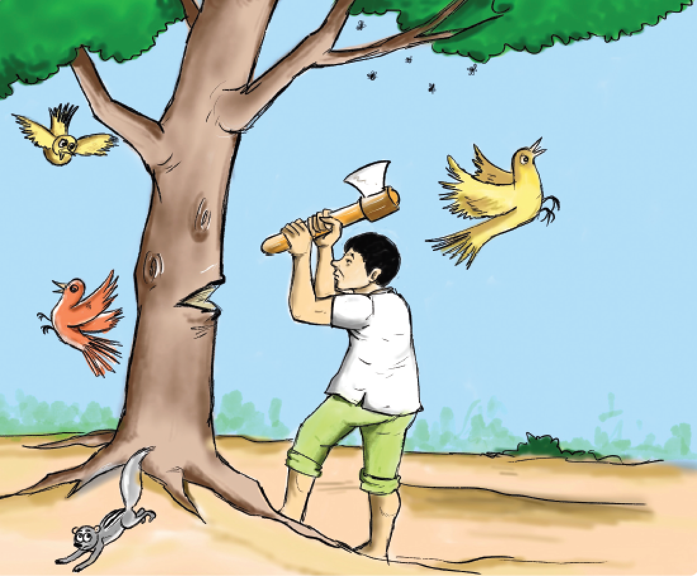

IMAGE, QR CODE BJ2OR is given
The description of the picture is begins

1. The pathetic picture of a man cutting down the tree with an axe.
2. All animals, birds and bees run out of fear.
The description of the picture is ends
Once upon a time there was a farmer. He lived in a village, up in the hills, beside a forest. In his farm where he grew many kinds of vegetables, he also had an apple tree. For many years the farmer and his family had enjoyed the tastiest apples from the tree. As a boy, the farmer and his friends played under the apple tree. They played hide and seek around the tree. They climbed the tree and swung on it and in season they plucked and ate the apples.